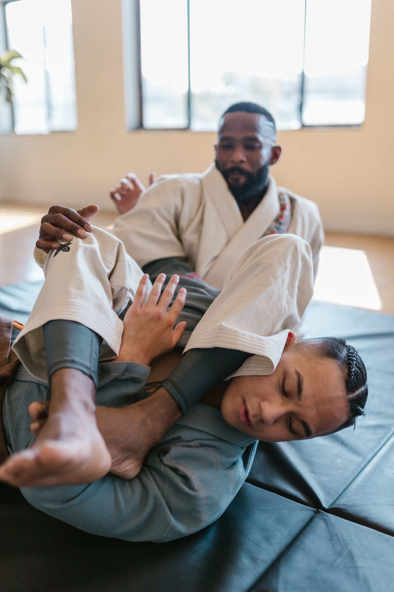
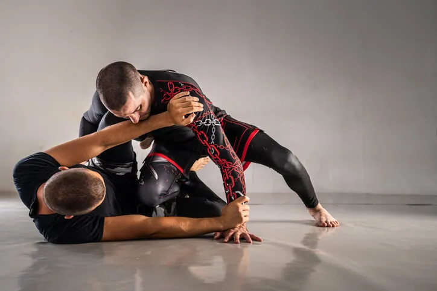
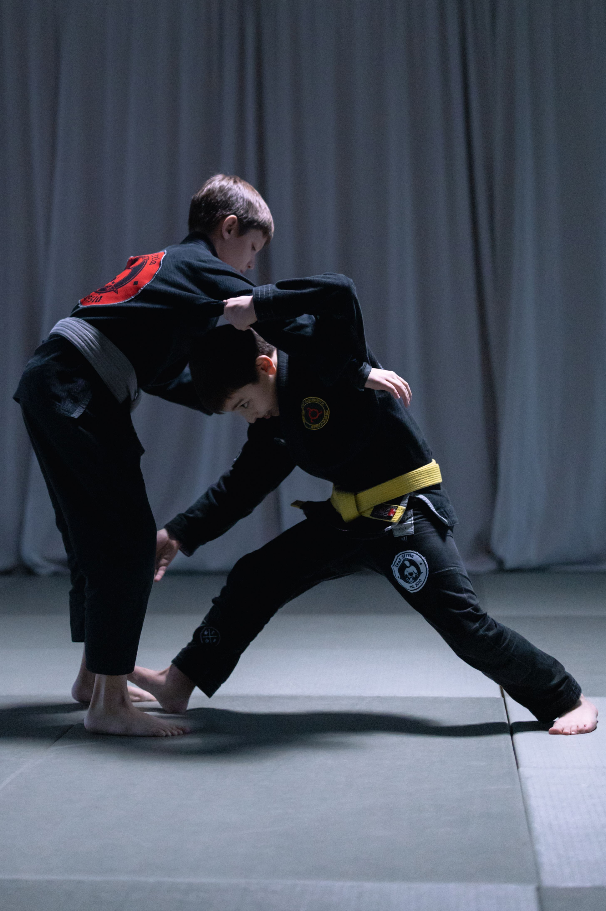
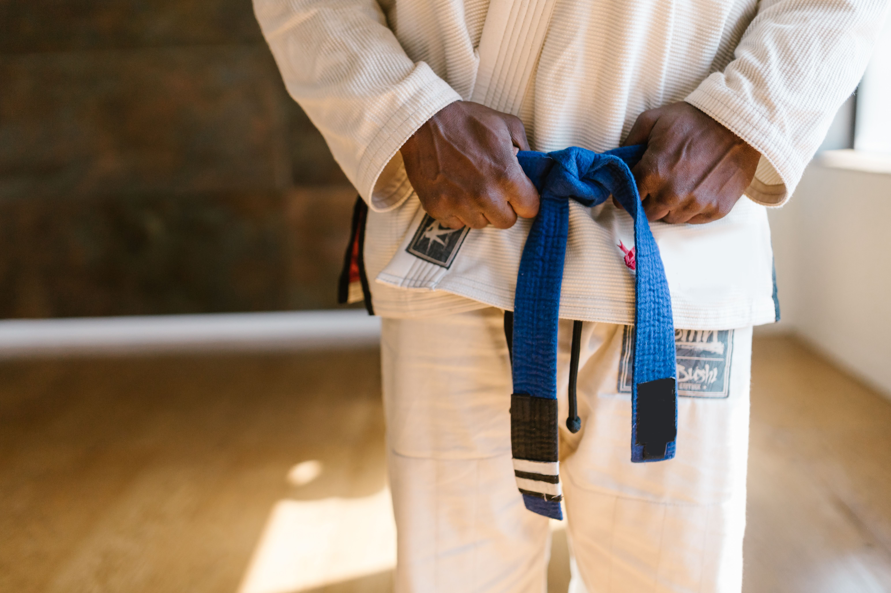

Por que praticar Jiu-Jitsu?
O Jiu-Jitsu vai muito além de uma arte marcial. Sua prática proporciona benefícios físicos, mentais e sociais que contribuem para uma vida mais saudável e equilibrada. Durante os treinos, os alunos desenvolvem disciplina, respeito, autocontrole e perseverança, valores que podem ser aplicados tanto nos estudos e no trabalho quanto na vida pessoal.
- Melhora do condicionamento físico e da resistência;
- Aumento da autoconfiança e da autoestima;
- Redução do estresse e da ansiedade;
- Maior disciplina e foco;
- Incentivo à superação pessoal;
- Mais qualidade de vida e bem-estar.
